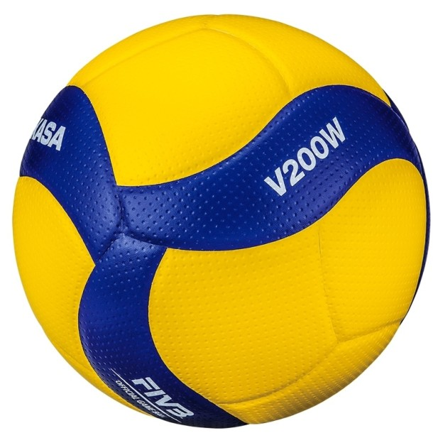

Piłka siatkarska Mikasa V200W

Cena: 399,00 zł
Mikasa V200W to oficjalna piłka meczowa FIVB, wykorzystywana na najważniejszych turniejach międzynarodowych. Zapewnia doskonałą kontrolę oraz stabilną trajektorię lotu.
Główne cechy produktu
- Atest Międzynarodowej Federacji Piłki Siatkowej (FIVB Approved)
- Układ 18 aerodynamicznie wyprofilowanych paneli
- Podwójnie dimplowana powierzchnia z mikrowłókien stabilizująca tor lotu
- Oryginalna kolorystyka zapewniająca znakomitą widoczność w hali
Parametry techniczne
| Parametr | Wartość |
|---|---|
| Rozmiar | 5 (oficjalny) |
| Waga | 260 – 280 g |
| Obwód | 65 – 67 cm |
| Materiał | Syntetyczna skóra PU, mikrofibra |